Screenshots for Video 7LH01TSqou8
Slide from 2 seconds before the transition at: 01:28
Slide from 2 seconds before the transition at: 03:44
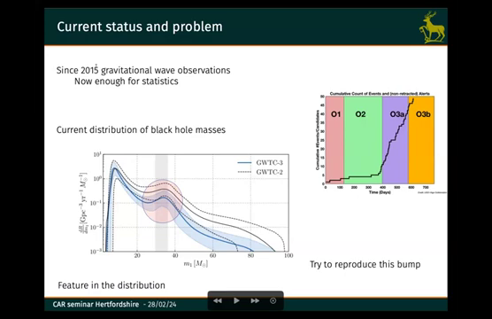
Slide from 2 seconds before the transition at: 04:02
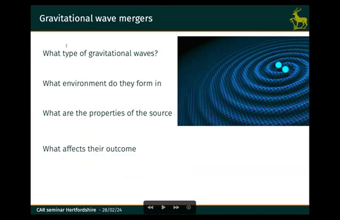
Slide from 2 seconds before the transition at: 04:53
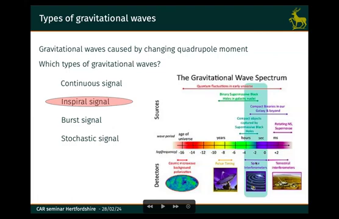
Slide from 2 seconds before the transition at: 06:04
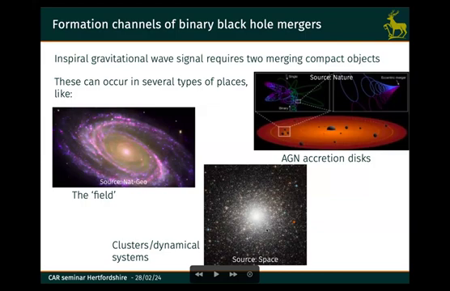
Slide from 2 seconds before the transition at: 07:15
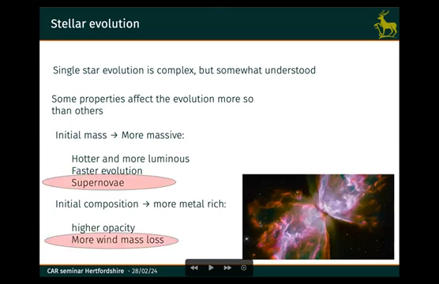
Slide from 2 seconds before the transition at: 08:53
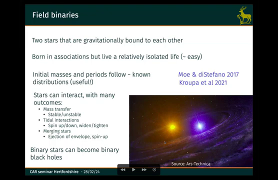
Slide from 2 seconds before the transition at: 10:41
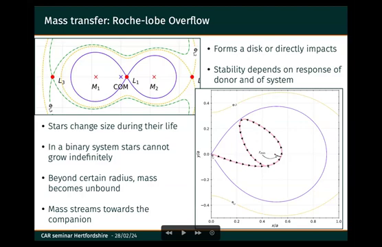
Slide from 2 seconds before the transition at: 13:13
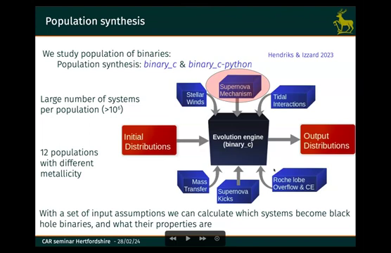
Slide from 2 seconds before the transition at: 13:54
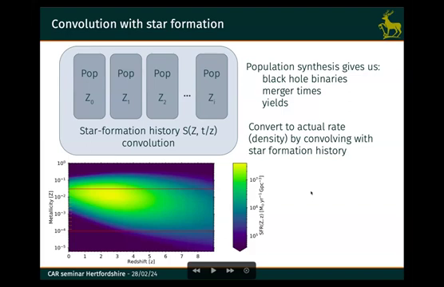
Slide from 2 seconds before the transition at: 17:20
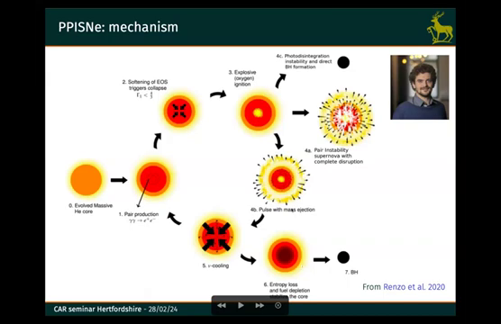
Slide from 2 seconds before the transition at: 18:37
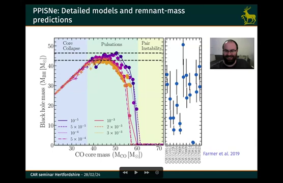
Slide from 2 seconds before the transition at: 20:06
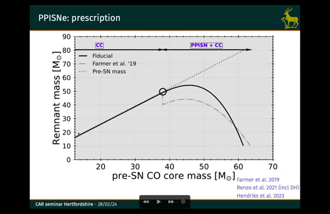
Slide from 2 seconds before the transition at: 25:46
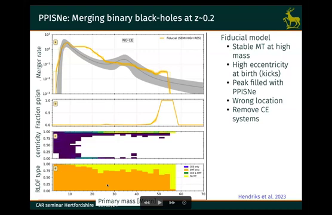
Slide from 2 seconds before the transition at: 27:03
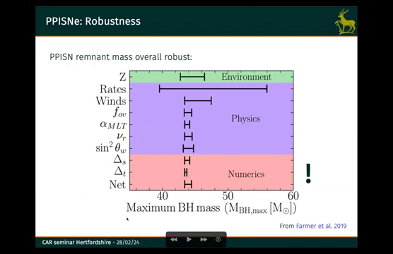
Slide from 2 seconds before the transition at: 28:43

Slide from 2 seconds before the transition at: 30:48
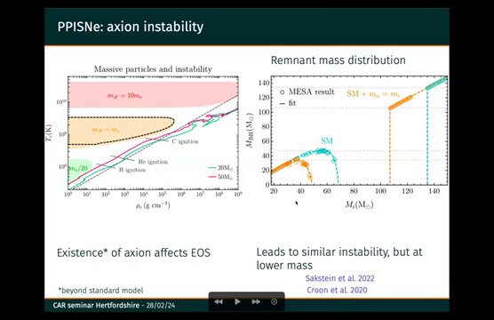
Slide from 2 seconds before the transition at: 32:24
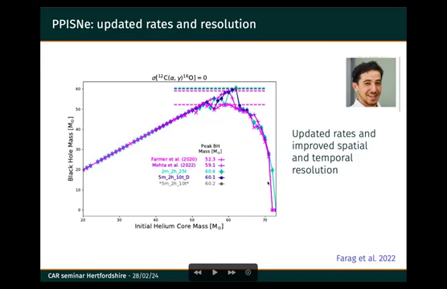
Slide from 2 seconds before the transition at: 33:26
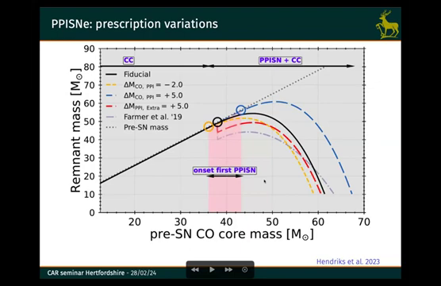
Slide from 2 seconds before the transition at: 33:28
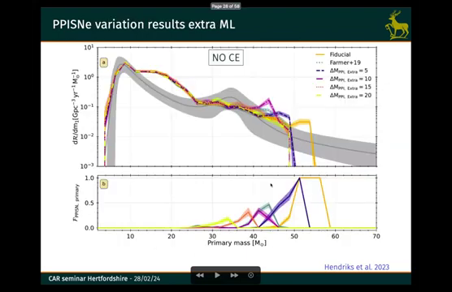
Slide from 2 seconds before the transition at: 36:56
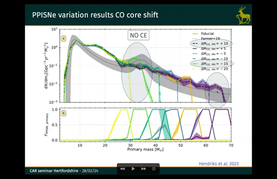
Slide from 2 seconds before the transition at: 40:05
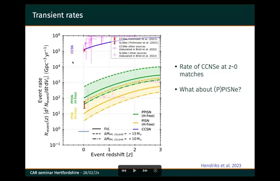
Slide from 2 seconds before the transition at: 40:05